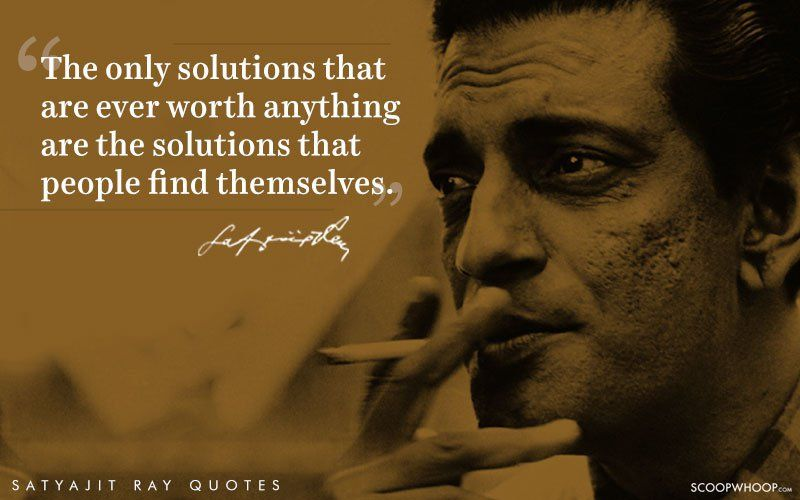
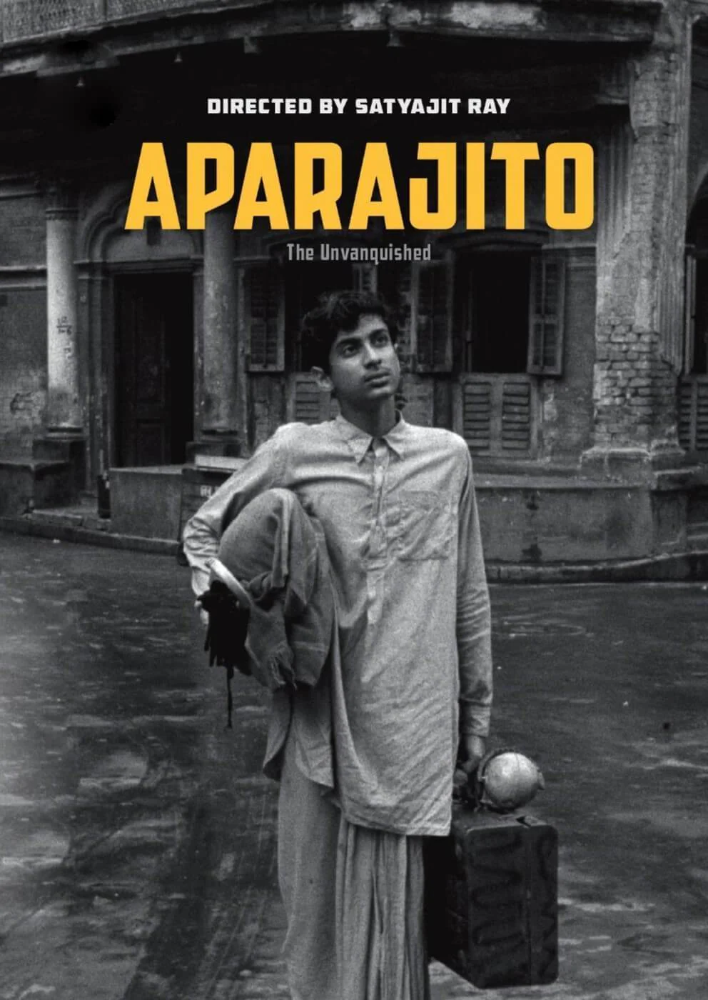
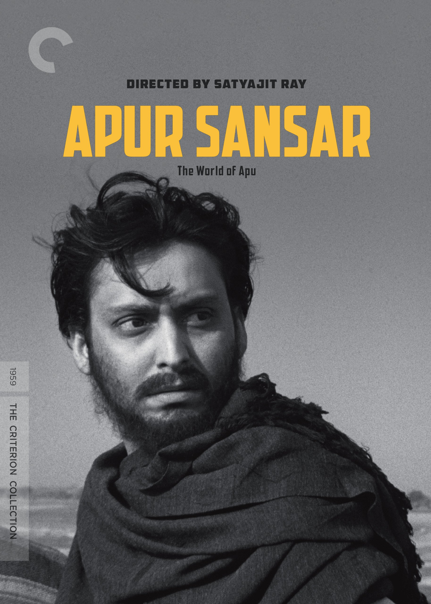
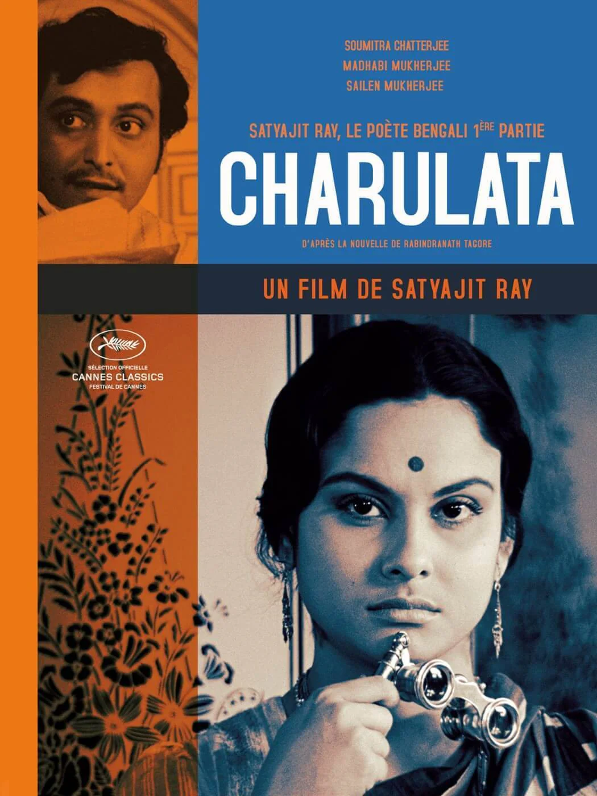
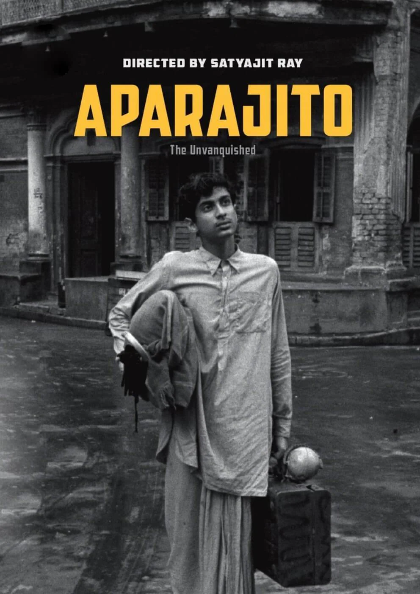
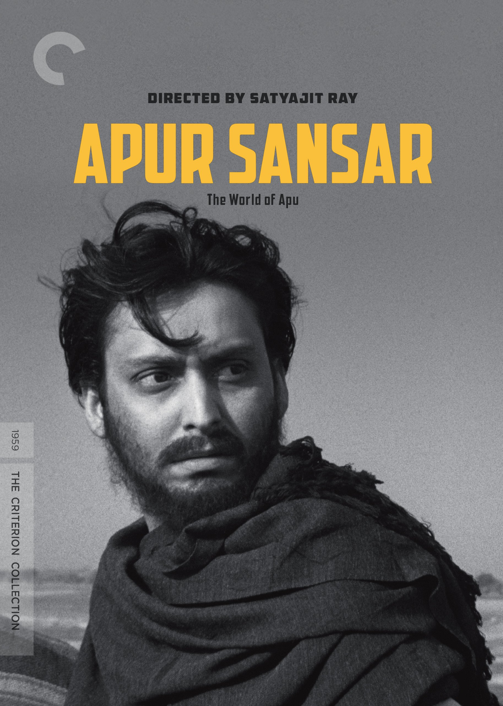
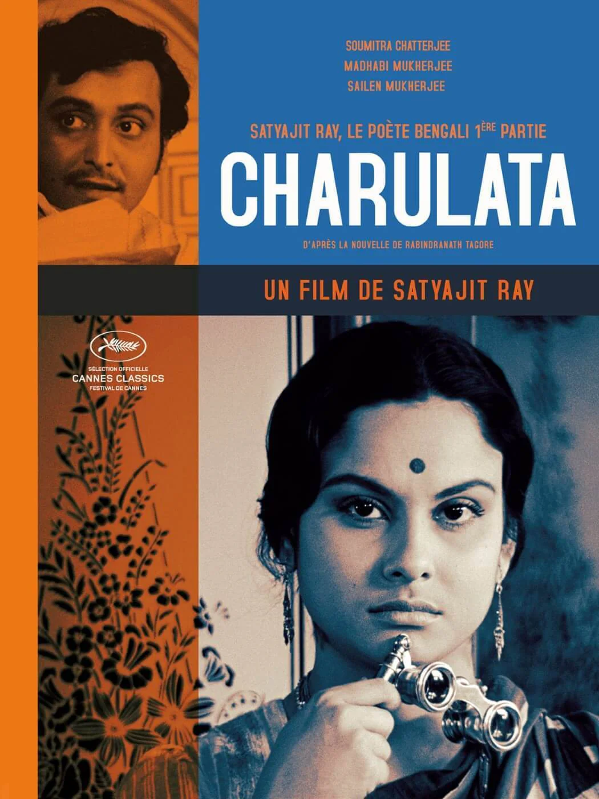

About Satyajit Ray
Satyajit Ray (1921-1992) was a renowned Indian filmmaker, screenwriter, music composer, graphic artist, and author. He is widely regarded as one of the greatest filmmakers in the history of cinema. Ray's films, mostly in Bengali, are known for their realism, humanism, and strong narrative. He is credited with bringing international attention to Indian cinema. Ray was born in Calcutta (now Kolkata) into a prominent family. His interest in art and literature developed early, and he was deeply influenced by the works of Rabindranath Tagore. Ray's filmmaking career began with "Pather Panchali" (1955), the first film of his acclaimed Apu Trilogy, which won several international awards and established him as a major filmmaker. Throughout his career, Ray continued to produce a diverse range of films, including adaptations of literary works, detective films, and documentaries. His films often tackled social issues and portrayed the complexity of human relationships with sensitivity and depth. Ray's unique visual style, attention to detail, and use of music are hallmarks of his work. Apart from filmmaking, Ray was a prolific writer and illustrator. He created two popular fictional characters, Feluda (a detective) and Professor Shonku (a scientist), and wrote numerous short stories and essays. Satyajit Ray's contributions to cinema have left a lasting impact on filmmakers around the world. His work continues to be celebrated for its artistic merit and profound storytelling, making him a cultural icon in India and beyond.
Notable Films
- Pather Panchali (1955)
- Aparajito (1956)
- Apur Sansar (1959)
- Charulata (1964)
- Devi (1960)
Gallery
 




